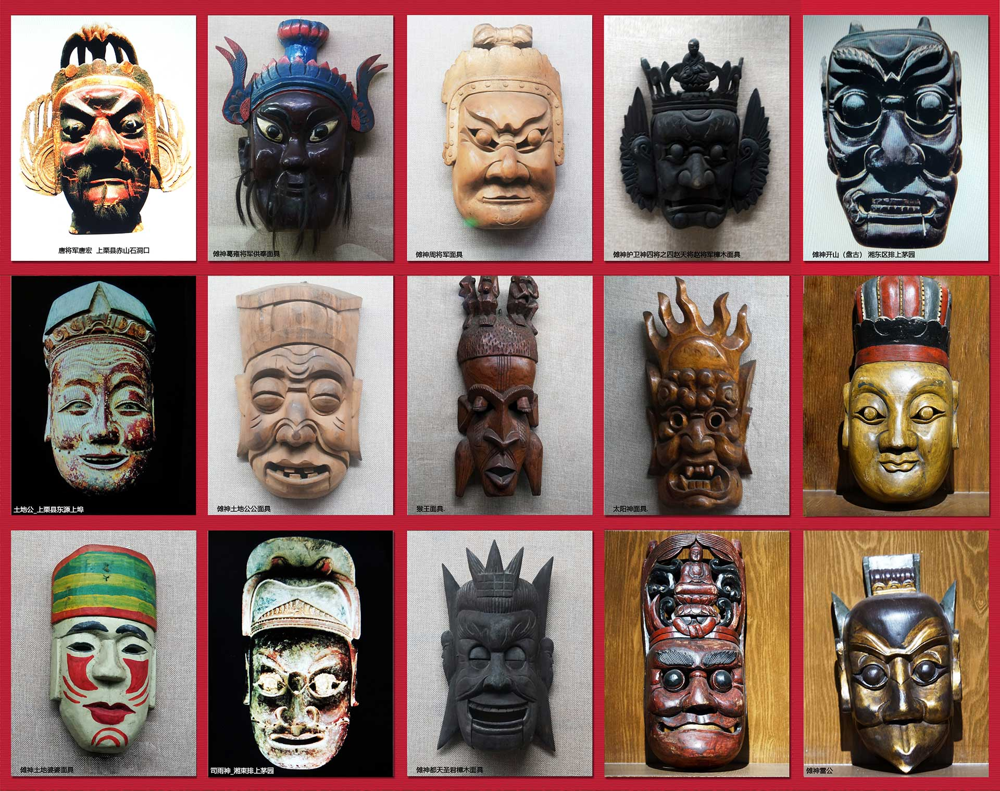

VR展厅是基于虚拟现实技术和互联网技术的一种足不出户也可以感受展览场馆现场的一种全新体验的VR作品，不仅有沉浸感而且有交互性。我校虚拟现实技术课程中的VR展厅 / AR识图教学实验，计划利用学生三维建模课程所制作的萍乡傩面具模型以及萍乡傩庙模型，或者根据萍乡博物馆傩面具展馆，利用Unity技术和一些虚拟现实内容开发编辑工具创建VR展厅作品，以及AR识图作品，展示萍乡历史文化瑰宝-萍乡傩面具，学习并掌握虚拟现实技术应用。
实验目的：
1. 巩固三维建模知识与技能；
2. 学会Unity中应用SteamVR及VRTK插件开发虚拟现实作品的技能技巧；（重点）
3. 掌握虚拟现实内容开发编辑器VMake及VLions的应用技巧；
4. 掌握利用Vuforia SDK制作AR识图作品的技能技巧；
实验器材（软件）：
HTC VIVE VR眼ardown.jpgardown.jpgardown.jpgardown.jpgardown.jpg镜、单反相机。
软件 ：Unity 3D、V-Lions虚仿编辑器、SteamVR插件、VRTK插件、Vuforia SDK
萍乡傩面具模型（学生作品）
萍乡傩庙VR作品展示
萍乡傩面具AR识图作品演示
附：萍乡傩面具AR识别图示例
